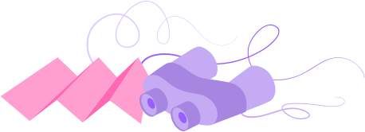

Modo de cor do tema:
Direções:
Estilos de navegação:
Estilo do menu de navegação:
Estilos de página:
Estilos de largura do layout:
Posições do menu:
Posições do cabeçalho:
Estilos de layout do menu lateral:
Cores do menu:
Cores do cabeçalho:
Cor primária do tema:
Plano de fundo do tema:
Menu com imagem de fundo:

401
Houve um problema com a página. Tente novamente mais tarde ou entre em contato com o suporte.